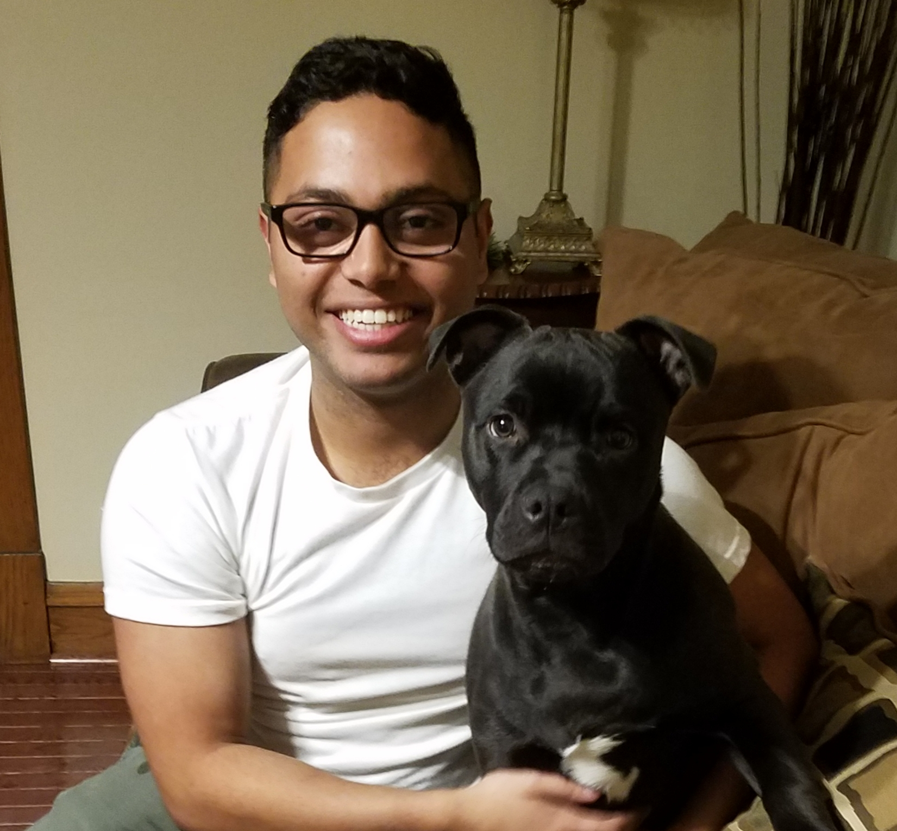

I was born and raised in Chicago, Illinois. I graduated from Boston University in 2019 with a Bachelors degree in Biomedical Engineering. At BU, I was the Vice President of the university chapter of the Society of Hispanic Professional Engineers. After college I worked for Zimmer Biomet as a Product Surveillance Specialist.
Currently I am living in Chicago and participating in the ChiCodes Coding Bootcamp program hosted by Coding Gurus. Once the program is completed in December 2020, I plan to get a job as a Software Engineer with a focus in Data Analysis.